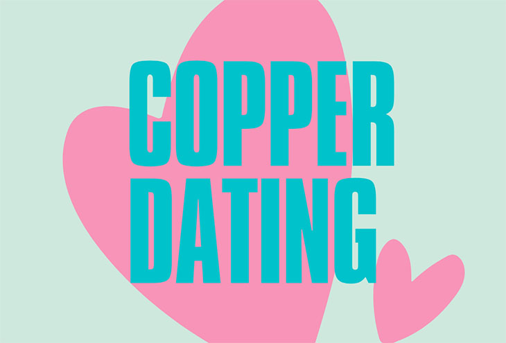

Prepararse para una cita puede ser estresante, entre otros está el añadido de tener que preocuparse por lo que ponerse. Aquí compartimos consejos sobre qué ponerse en una primera cita para aumentar tu confianza.
La mayoría de las personas que buscan el amor hoy en día conocen bien el arte de las citas en línea. Ya sea que sea un aficionado a Tinder o un cliente habitual del sitio web Telegraph Dating, estará familiarizado con el proceso: busque en los perfiles hasta encontrar uno que le guste, inicie una conversación, planifique una cita y cruce los dedos de las manos y de los pies. que son tan atractivos en la vida real.
Afortunadamente, existen maneras para aumentar tu confianza antes de esa desalentadora primera reunión. Una de las mejores armas de tu arsenal es planificar un atuendo infalible que combine las tendencias de moda con tu propio estilo. Esto suena bien en teoría, pero ¿cómo se decide realmente qué ponerse en una primera cita?
Si te falla el sentido de la moda, todavía hay esperanza. Sigue leyendo para conocer nuestros consejos.
Aprovecha al máximo tu armario existente
Qué ponerse en una primera cita puede ser la excusa perfecta para ir de compras y elegir algunos modelitos nuevos. Pero no hay ninguna regla que diga que un atuendo para la primera cita debe ser nuevo. De hecho, hay mucho que decir a favor de asaltar tu armario existente para crear el look perfecto.
Reglas para elegir qué ponerse en una primera cita
Hay dos reglas a tener en cuenta inicialmente cuando planificas el atuendo de la primera cita:
- Lucir como uno mismo\a
- Ponte cómodo\a
Con estas reglas en mente, tu colección actual de ropa es el lugar perfecto para comenzar.
Preguntas que debes hacerte al decidir qué ponerte en una primera cita
Si no estás seguro\a de cuál de tus prendas te queda bien, hazte las siguientes preguntas.
- ¿Qué prendas suelen recibir cumplidos de amigos y compañeros de trabajo?
- ¿Qué prendas usas una y otra vez porque te hacen sentir bien cuando te miras en el espejo?
- ¿Qué sería lo primero en tu maleta si te fueras un fin de semana?
Si tus prendas viejas favoritas aún te hacen sentir bien, pero se están desgastando un poco, puedes ir de compras para encontrar un reemplazo decente. Pero no olvides que se puede lograr mucho con una buena plancha de vapor, un abrigo elegante y algunos accesorios bien elegidos.
Elija algunos artículos de vestuario nuevos
Tal vez estás buscando una falda nueva para combinar con ese top favorito que tienes, una corbata nueva que complementará tu traje que garantiza impresionar, o simplemente un nuevo producto para el cabello. Independientemente de lo que esté buscando, un viaje de compras antes de su gran cita es inevitable.
No todos disfrutamos comprando, pero puede ser mejor visitar tiendas y probarse que comprar en línea. Es mejor ir con una idea en mente, pero no tengas miedo de probar algo nuevo y emocionante: ¡lo único que importa es que te sientas genial en ello!
En un nivel práctico, opta por artículos que te resulten cómodos. Eso significa telas transpirables, prendas que no restringen tus movimientos y zapatos con los que puedas caminar sin que te hagan ampollas.
Si todavía te falta inspiración en este momento, ¡sigue leyendo! Tenemos algunas ideas para hacer fluir esos juegos de moda.
Qué ponerse en una primera cita durante el día
Las citas diarias pueden ser algo maravilloso, pero plantean sus propios desafíos. Tienes que armar una apariencia que impresione lejos de la luz tenue y favorecedora de un bar.
¿Las buenas noticias? Los atuendos para la cita del día son, por naturaleza, más casuales y cómodos, lo que te hará sentir más a gusto en tu piel. Querrás adaptar tu look según la actividad, pero los artículos sugeridos incluyen zapatos cómodos, para que pueda dar un paseo improvisado, y una chaqueta o abrigo elegante (según la temporada).
Para las mujeres, es difícil equivocarse con un par de jeans bien ajustados, una blusa y una elegante gabardina. Termina el look con unos mocasines de piel, sutiles joyas plateadas y un ligero maquillaje natural.
Para los hombres, los jeans elegantes o los pantalones caqui también son una buena opción para un atuendo de día. Combínalo con un polo o una camisa a cuadros y unas zapatillas deportivas frescas.
Estarás preparado\a para casi cualquier eventualidad.
Qué ponerse en una primera cita nocturna
Cuando buscamos un modelito de noche, se trata de lograr un equilibrio entre el atractivo sexual y la practicidad. ¡Quieres verte y sentirte lo mejor posible, pero no a costa de tu comodidad, cuenta bancaria o capacidad para comer!
Aunque una cita por la noche suele ser más sencilla que una cita por el día, aún debes adaptar tu atuendo a la actividad. Si vas a un pub a tomar una pinta antes de tomar un pollo al curry, un traje o un vestido de cóctel no será la opción ideal. Un bar de lujo y un restaurante elegante, por otro lado, exigirán un poco más de cuidado y atención en el departamento de vestuario.
Para las mujeres, un vestido de cita clásico es difícil de superar. Ignora las tendencias de moda del momento y en su lugar concéntrate en encontrar algo que te quede como un guante, que muestre sus mejores características y transmita tu estilo. Combínalo con tacones cómodos o zapatos planos adornados, un par de aretes llamativos o un collar grueso y una capa exterior adecuada.
En cuanto al maquillaje, trata de mantener las cosas simples y no intentes nada que no hayas probado antes. Como nota, generalmente querrás elegir entre un labio llamativo o un ojo atrevido; ambos a la vez pueden ser abrumadores.
Para los hombres, es el cambio entre un traje o algo más informal. En un ambiente más relajado, una camisa blanca con jeans elegantes y zapatos brogue puede ser el look perfecto. Si prefieres ir formal, usa un traje que te quede bien y una camisa elegante, con o sin corbata. Los detalles pueden venir en forma de pañuelo de bolsillo, cinturón y zapatos del mismo color.
Por último, si bien no menos importante...
Sea lo que sea que termines usando en esa importante primera cita, solo recuerda estas reglas:
- Si no vas a comprar ropa nueva, asegúrate de que tu ropa está recién lavada y planchada. ¡Lava los trajes y vestidos formales en seco, y tómate tiempo para planchar correctamente las camisas y blusas!
- Lustra tus zapatos
- Esmérate con tu pelo: si ves que no hay cómo darle forma, vete a la peluquería a por un buen corte o quizá hazte un peinado antes de su gran noche.
- Limpiar y recortar las uñas (y las uñas de los pies)
- ¡Evita la ropa interior de los años 50! Deja de lado esos pantalones grises holgados o esas bragotas faja y elije ropa interior que sea un poco más agradable a la vista: ¡nunca se sabe a dónde puede acabar la noche!
Una nueva forma de tener citas
Citas breves por video de 3 minutos.
Ahorra tiempo y establece conexiones reales.
Saber más